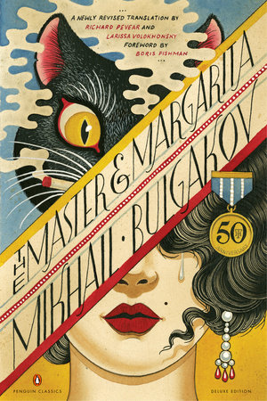

"- Bulgakov's works are timeless, transcending their era to speak to the universal struggles of humanity—faith, power, and the search for meaning..."
- MB
- ©EZ
- about
- favourites
- characters
- life
5 Reasons
I love Bulgakov
-
Sketches of a Country Doctor
-
Morphine
-
The fatal eggs
-

The Master and Margarita
-

A Dog's Heart

Reason 1 - Sketches of a Country Doctor
1919
Collection of short stories based on his experiences as a young doctor in rural Russia. These sketches depict the challenges, isolation, and ethical dilemmas faced by medical professionals working in remote, often under-resourced settings. Through vivid and sometimes humorous anecdotes, Bulgakov explores the emotional strain and dedication required of a doctor, highlighting the tension between the ideals of medical practice and the harsh realities of life in the countryside.
Reason 1 - Morphine
1927
Morphine is a short, semi-autobiographical story by Mikhail Bulgakov that delves into addiction, despair, and the challenges of life as a young doctor in rural Russia. Written in diary format, it follows Dr. Polyakov, a physician who becomes addicted to morphine after using it to relieve pain from a personal crisis. The story is dark, intense, and reflective of Bulgakov’s own brief struggle with morphine, which he used as a painkiller during a severe illness. Through Polyakov’s descent, Bulgakov explores the psychological grip of addiction and the helplessness that accompanies it. The narrative exposes the mental and physical toll of isolation, loneliness, and the demands of medical work in a harsh, remote environment. Bulgakov’s firsthand understanding gives Morphine a raw authenticity, as it tackles the painful duality of the doctor’s role—as both healer and, at times, a vulnerable patient.
Reason 1 - The fatal eggs
Unpublished
Fatal Eggs by Mikhail Bulgakov is a darkly comedic science fiction novel that critiques Soviet society. The story centers on Professor Persikov, a biologist who discovers a red ray that accelerates growth and reproduction in organisms. Amid a deadly poultry epidemic, the Soviet government seizes his invention to boost chicken production but accidentally uses it on snake and crocodile eggs instead. The experiment goes horribly wrong, unleashing giant, deadly reptiles on Russia. As chaos ensues, Bulgakov uses this tale to satirize government incompetence and the dangers of unchecked scientific experimentation.
Reason 1 - The Master and Margarita
1967
The story concerns a visit by the devil and his entourage to the officially atheistic Soviet Union. The devil, manifested as one Professor Woland, challenges the Soviet citizens' beliefs towards religion and condemns their behavior throughout the book. The Master and Margarita combines supernatural elements with satirical dark comedy and Christian philosophy, defying categorization within a single genre. It exhibits autobiographical elements, but is also dominated by many aspects of fiction. Many critics consider it to be one of the best novels of the 20th century, as well as the foremost of Soviet satires.
Reason 1 - A Dog's Heart
1968
Heart of a Dog by Mikhail Bulgakov is a satirical novel that critiques the Soviet Union's early communist experiment. The story follows Professor Preobrazhensky, who transforms a stray dog, Sharik, into a human by implanting human organs. As Sharik becomes the crude, unruly "Sharikov," he embodies the chaos and degeneration Bulgakov associates with the new Bolshevik government. Sharikov’s behavior soon disrupts the professor’s life, mirroring how Bolshevism upended Russian society. Eventually, Preobrazhensky reverses the experiment, turning Sharikov back into a dog, highlighting Bulgakov’s view that the Soviet push for forced equality was inherently flawed.
Michael Bulgakov
1891 - 1940
Mikhail Bulgakov was born in Kiev on May 15 1891. Two of his grandparents were priests and his father was an assistant professor. At school Bulgakov developed an interest in Russian writing, European writing, the theatre and the opera. In 1913 Bulgakov married Tatiana Lappa. When the First World War started he volunteered with the Red Cross as a doctor. Bulgakov was sent to an area where fighting was heavy, and he was badly injured at least twice. In 1916, he graduated from the Medical School of Kiev University. After the Russian Civil War, Mikhail and his brothers went to the Caucasus in Western Russia. Mikhail worked as a journalist. Many members of Bulgakov's family left Russia for Western Europe. The injuries Bulgakov received in the First World War continued to cause him a lot of pain. To ease the pain, he started injecting himself with morphine. He eventually became addicted. He wrote a book about this period called Morphine, which was finally released in 1926. The injuries Bulgakov received in the First World War continued to cause him a lot of pain. To ease the pain, he started injecting himself with morphine. He eventually became addicted. He wrote a book about this period called Morphine, which was finally released in 1926. Bulgakov left medicine behind as he was now sure he wanted to be a writer. He moved to Moscow with his wife Tatiana in 1921. Bulgakov eventually divorced Tatiana, and married Lyubov' Belozerskaya in 1924. He published a number of works in the early 1920s. By 1927, however, he was criticised by people who said he was writing against the Soviet government. By 1929, Bulgakov's writing career was in ruins. Government censorship stopped his work and plays being released in the USSR. In 1931, Bulgakov got married again, to Yelena Shilovskaya. Yelena inspired one of the main characters in Bulgakov's most famous novel, The Master and Margarita. In the last ten years of his life, Bulgakov continued to write novels, plays and translate works in other languages. Many could still not be published in the USSR of the 1930s. Those that were published were often heavily criticised. Bulgakov died from problems with his kidneys on March 10, 1940. He was buried in the Novodevichy Cemetery in Moscow.
.jpg)